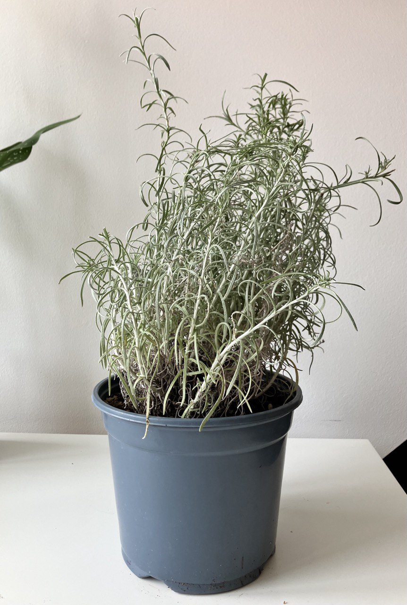

Activity
- Scheduled
- Repotting 03-08-2025
- Feeding 01-09-2024
Kari Plant Care Guide
Environment
Light
- Indirect Sunlight: Kari plants thrive in bright, indirect light. Direct sunlight can cause leaf burn, while too little light can slow growth. A spot near a window with filtered light is ideal.
Soil
- Well-Draining Soil: Use a well-draining potting mix. A blend of peat moss, perlite, and regular potting soil works well. Ensuring good drainage is key to preventing waterlogged roots.
Temperature
- Optimal Temperature: Kari plants thrive in temperatures between 65-80°F (18-27°C). They can tolerate temperatures down to 50°F (10°C) but should be kept away from drafts and sudden temperature changes.
Routine jobs
Watering
- Watering Schedule: Water the Kari plant moderately. Allow the top inch of soil to dry out between waterings. Overwatering can lead to root rot.
- Humidity: Kari plants prefer moderate to high humidity. If the air is dry, mist the plant occasionally or use a humidifier to maintain adequate humidity levels.
Feeding
- Fertilization: Feed the Kari plant every 4-6 weeks during the growing season (spring and summer) with a balanced liquid fertilizer diluted to half strength. Reduce feeding during the fall and winter months.
Potting
- Container Choice: Choose a pot with drainage holes to prevent waterlogging. Kari plants can be grown in small to medium-sized pots as they do not have an extensive root system.
- Repotting: Repot the plant every 1-2 years or when it outgrows its current pot. Choose a pot that is slightly larger than the current one.
Troubleshooting
- Common Pests: Watch for pests like aphids, spider mites, and mealybugs. Treat infestations promptly with insecticidal soap or neem oil.
- Leaf Care: Remove any yellow or damaged leaves to keep the plant healthy and prevent disease. Clean the leaves occasionally to remove dust.
Flowering
- Bloom Cycle: If the Kari plant flowers, provide it with a bit more light and slightly more frequent watering to support the blooming process. After flowering, continue regular care.